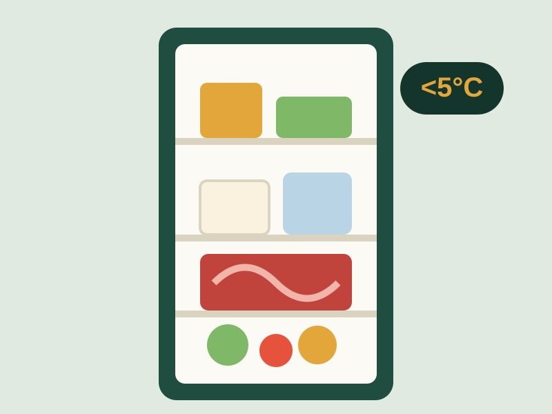
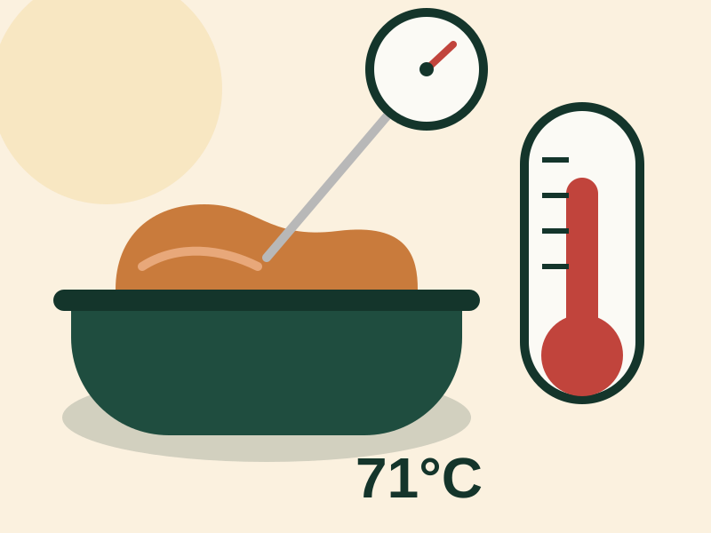
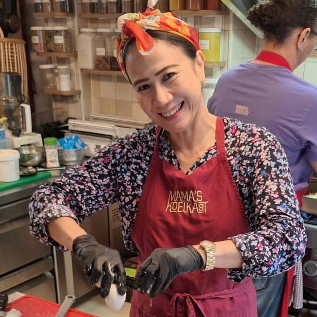

Untuk pemilik warung, toko kelontong & usaha makanan kecil
Makanan bersih & aman dimulai dari kebiasaan sederhana di kedai Anda.
Kedai Hygenies membantu Anda menerapkan kebersihan dan keamanan pangan sehari-hari — dari cuci tangan, memisahkan bahan mentah, hingga menyimpan stok pada suhu yang tepat — supaya pelanggan percaya dan usaha Anda terhindar dari masalah.
- Bahasa Indonesia
- Mudah dipraktikkan
- Berbasis panduan EFSA & HACCP
Kenapa ini penting bagi usaha Anda
Kepercayaan pelanggan dibangun di dapur dan etalase, bukan hanya di kasir.
Warung dan toko yang menjual makanan setiap hari berhadapan dengan risiko yang sama seperti restoran besar: bakteri, kontaminasi silang, dan penyimpanan yang keliru. Bedanya, usaha kecil sering menjalankan semua ini tanpa panduan tertulis.
Kabar baiknya, sebagian besar risiko bisa dicegah dengan kebiasaan yang murah dan mudah diterapkan setiap hari — bukan investasi besar. Kedai Hygenies merangkum praktik yang dipakai otoritas keamanan pangan di berbagai negara, disesuaikan untuk konteks warung dan toko di Indonesia.
Pelajari Panduannya“Mengetahui dan menjalankan beberapa aturan dasar kebersihan dapat mencegah keluarga dan pelanggan Anda jatuh sakit akibat makanan.”
— Diadaptasi dari panduan ilmuwan keamanan pangan Uni Eropa (EFSA)Lima langkah inti
Prinsip dasar keamanan pangan yang wajib dijalankan setiap hari
Kelima langkah ini adalah urutan kerja nyata di warung atau toko Anda — dari tangan yang bersih sampai makanan tersimpan aman. Klik tiap langkah untuk penjelasan lengkapnya.
Bersihkan tangan & permukaan
Cuci tangan, talenan, dan peralatan sebelum dan sesudah mengolah makanan.
2Pisahkan bahan mentah
Jauhkan daging, unggas, dan seafood mentah dari makanan siap saji.
3Masak sampai matang
Gunakan suhu yang tepat agar bakteri berbahaya benar-benar mati.
4Simpan pada suhu aman
Dinginkan cepat, jangan biarkan makanan matang lama di suhu ruang.
5Catat & pantau rutin
Buat kebiasaan mengecek dan mencatat, seperti sistem HACCP sederhana.
Lihat langsung
Kebiasaan kecil yang terlihat jelas di kedai yang bersih
Tiga hal yang paling sering menentukan apakah makanan di tempat Anda aman atau tidak.

Kenali pemiliknya
Ada pertanyaan soal kebersihan di usaha Anda? Hubungi kami.
Nama Pemilik — Pemilik Kedai Hygenies. Silakan hubungi langsung untuk bertanya atau meminta saran praktis untuk warung dan toko Anda.
Siap menerapkannya di warung Anda?
Baca panduan lengkap, tabel suhu memasak, dan checklist harian yang bisa langsung dipraktikkan.